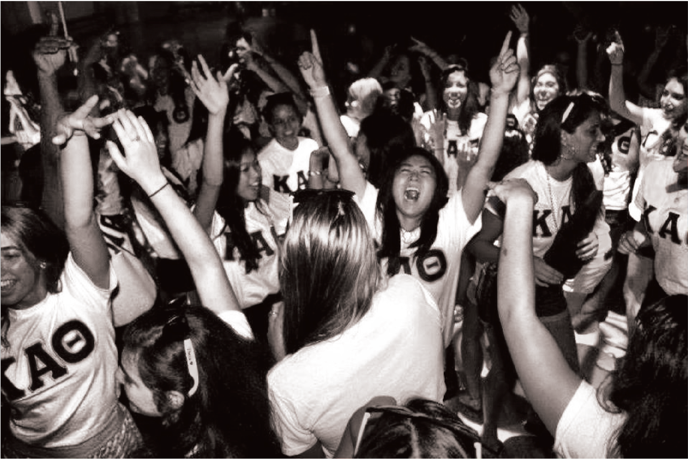

Welcome to Kappa Alpha Theta at Carnegie Mellon University! Being a Theta sister at Gamma Theta is an amazing experience. It means being surrounded by women who all share and value scholarship, service, leadership, and most importantly sisterhood.
Gamma Theta sisters are present throughout campus by involvement in volunteer, academic, athletic, and student government organizations. As sisters we execute two signature philanthropy events per year, participate in various service events, perform a great show for Greek Sing, and always build an amazing booth.
More importantly than the events we participate in is what we do together as sisters. We have a busy social schedule attending events with other fraternities, formals and crush parties, sisterhood events, and especially the spontaneous moments where sisters get together to hang out in the kitchen or watch a movie.
As president, I am so proud to call the women of Gamma Theta my sisters; without them Theta could not be the most rewarding and inspiring of my college experiences. I invite you to browse our website and learn more about Kappa Alpha Theta and the accomplishments and sisterhood of the women of the Gamma Theta chapter.
Loyally,
Emma McCune

© Kappa Alpha Theta • Gamma Theta Chapter • 2013